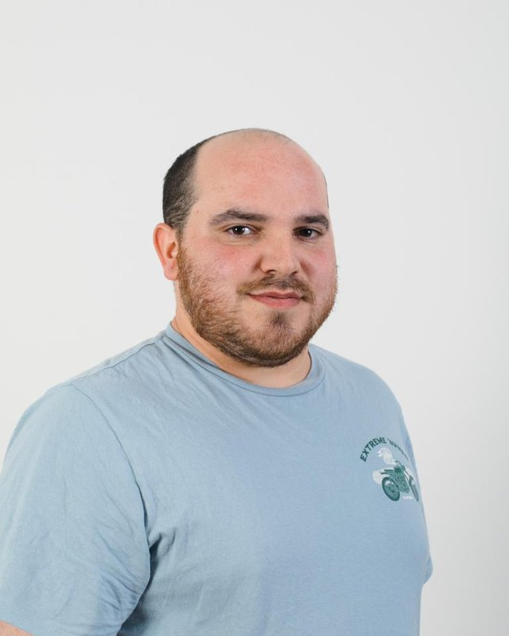

Data & software
SQL/Python data pipelines, traceability schemas and dashboards, and internal Python software for an electrolyzer manufacturing line.
Hi, I'm
I build physics-based models and numerical simulations of multidisciplinary systems, analyze process data, apply machine learning, and develop software used on production lines.

SQL/Python data pipelines, traceability schemas and dashboards, and internal Python software for an electrolyzer manufacturing line.
A deep-learning PoC to screen candidate electrode alloys, an in-house GenAI prototype for free-text questions to SQL, and an operating-sequence optimization tool.
Physics-based electrolyzer models in MATLAB and Simulink/Simscape, kinetic Monte Carlo, and quantum-mechanical materials modeling from my M.Sc.
Applied engineer and data scientist with 4 years of industrial R&D experience and a Technion M.Sc. in computational materials engineering.
Training in chemistry and scientific research helps me understand the processes behind the numbers.
From my current role as Data & Automation Engineer at H₂Pro.
Built internal Python software for an electrolyzer manufacturing line (desktop apps for monitoring and data acquisition, a database-to-PLC data-loading service, and a full-stack manufacturing execution system).
Built traceability schemas, SQL/Python data pipelines (including PLC-to-SQL Server ingestion), and Dash/PyQt dashboards for KPI analysis across R&D and Operations, with data-quality checks on production data.
Built a deep-learning PoC (dataset assembly, model training, evaluation) to screen candidate alloys for electrode materials, and an in-house GenAI prototype that converts free-text questions into SQL and visualizations.
Built and delivered to Operations a decision-support tool that finds the optimal operating sequence for a target function under pre-configured constraints.
Designed and built software that sets the electrolyzer's power use from available solar power.
Designed an AI-assisted engineering workflow (Claude Code, Codex) with codebase-expert agents for feature planning and issue diagnosis, and automated regression reviews before merges; used daily across these projects.
A renewable-energy startup
The projects from this role are listed under Selected work.
Technion
First-author paper · 2023
Reichman, Y. & Caspary Toroker, M. Advanced Theory and Simulations (Wiley-VCH), 2023. DOI: 10.1002/adts.202300155
M.Sc. thesis: Charge Transport Dynamics across Lattice-Mismatched Interfaces in Binary Semiconductor Heterostructures. Supervisor: Prof. Maytal Caspary Toroker.
Read the paperTechnion
Technion
Nebius Academy Israel (formerly YData)